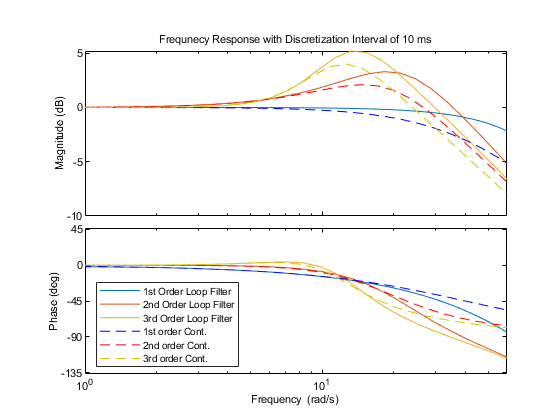
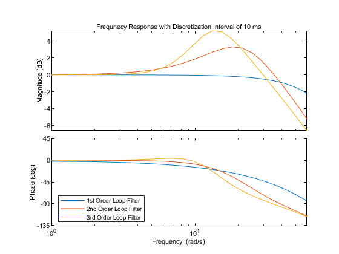
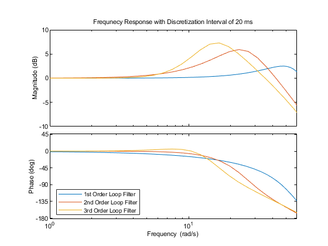
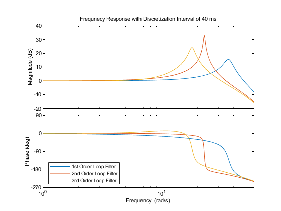
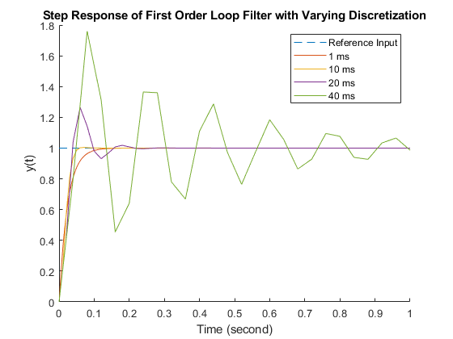
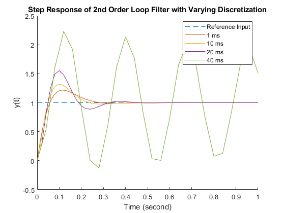
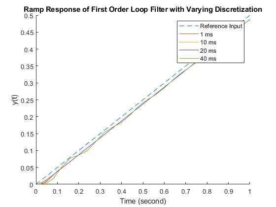
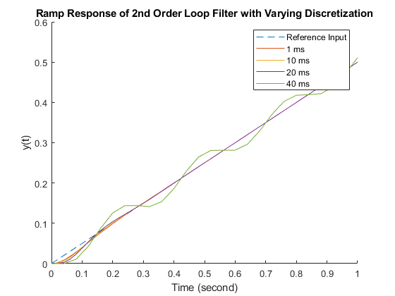
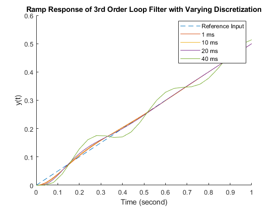

Contents
close all; clear all; clc;
Set up and Discretize filter loops at different orders
Bn = 10;
T = [1,10,20,40]./1000;
for ii = 1:length(T)
t = [0:T(ii):1];
ustep = ones(length(t),1);
slope = 1;
uramp = zeros(length(t),1);
uramp = 1/2*slope*t';
u = [ustep,uramp];
Az = tf([1 1],[2 0],T(ii));
NCO = tf(1,[1 0]);
NCOd = c2d(NCO,T(ii));
k1 = 4*Bn;
D1 = tf(k1,1);
Dd1 = c2d(D1,T(ii));
H1 = feedback(Az*NCOd*Dd1,1);
k2 = 8/3*Bn;
a2 = k2/2;
D2 = tf(k2*[1 a2],[1 0]);
Dd2 = c2d(D2,T(ii));
H2 = feedback(Az*NCOd*Dd2,1);
a3 = 1.2*Bn;
b3 = a3^2/2;
k3 = 2*a3;
D3 = tf(k3*[1 a3 b3],[1 0 0]);
Dd3 = c2d(D3,T(ii));
H3 = feedback(Az*NCOd*Dd3,1);
figure,
opts = bodeoptions;
opts.XLimMode = 'manual';
opts.XLim = {[1 6*10^1]};
bodeplot(H1,H2,H3,opts)
title(['Frequnecy Response with Discretization Interval of ',num2str(T(ii)*1000), ' ms'])
legend('1st Order Loop Filter','2nd Order Loop Filter','3rd Order Loop Filter','Location','southwest')
switch ii
case 1
ystep1(:,1)=lsim(H1,u(:,1),t);
ystep1(:,2)=lsim(H2,u(:,1),t);
ystep1(:,3)=lsim(H3,u(:,1),t);
yramp1(:,1)=lsim(H1,u(:,2),t);
yramp1(:,2)=lsim(H2,u(:,2),t);
yramp1(:,3)=lsim(H3,u(:,2),t);
case 2
ystep10(:,1)=lsim(H1,u(:,1),t);
ystep10(:,2)=lsim(H2,u(:,1),t);
ystep10(:,3)=lsim(H3,u(:,1),t);
yramp10(:,1)=lsim(H1,u(:,2),t);
yramp10(:,2)=lsim(H2,u(:,2),t);
yramp10(:,3)=lsim(H3,u(:,2),t);
case 3
ystep20(:,1)=lsim(H1,u(:,1),t);
ystep20(:,2)=lsim(H2,u(:,1),t);
ystep20(:,3)=lsim(H3,u(:,1),t);
yramp20(:,1)=lsim(H1,u(:,2),t);
yramp20(:,2)=lsim(H2,u(:,2),t);
yramp20(:,3)=lsim(H3,u(:,2),t);
case 4
ystep40(:,1)=lsim(H1,u(:,1),t);
ystep40(:,2)=lsim(H2,u(:,1),t);
ystep40(:,3)=lsim(H3,u(:,1),t);
yramp40(:,1)=lsim(H1,u(:,2),t);
yramp40(:,2)=lsim(H2,u(:,2),t);
yramp40(:,3)=lsim(H3,u(:,2),t);
end
end
   
Plot step response at different dicretization intervals
t1=0:T(1):1;
t10=0:T(2):1;
t20=0:T(3):1;
t40=0:T(4):1;
figure
title(['Step Response of First Order Loop Filter with Varying Discretization'])
hold on,
plot(t40,ustep,'--',t1,ystep1(:,1),t10,ystep10(:,1),t20,ystep20(:,1),t40,ystep40(:,1))
legend('Reference Input','1 ms','10 ms','20 ms', '40 ms')
xlabel('Time (second)')
ylabel('y(t)')
figure
title(['Step Response of 2nd Order Loop Filter with Varying Discretization'])
hold on,
plot(t40,ustep,'--',t1,ystep1(:,2),t10,ystep10(:,2),t20,ystep20(:,2),t40,ystep40(:,2))
legend('Reference Input','1 ms','10 ms','20 ms', '40 ms')
xlabel('Time (second)')
ylabel('y(t)')
figure
title(['Step Response of 3rd Order Loop Filter with Varying Discretization'])
hold on,
plot(t40,ustep,'--',t1,ystep1(:,3),t10,ystep10(:,3),t20,ystep20(:,3),t40,ystep40(:,3))
legend('Reference Input','1 ms','10 ms','20 ms', '40 ms')
xlabel('Time (second)')
ylabel('y(t)')
 

Plot ramp response at different dicretization intervals
figure
title(['Ramp Response of First Order Loop Filter with Varying Discretization'])
hold on,
plot(t40,uramp,'--',t1,yramp1(:,1),t10,yramp10(:,1),t20,yramp20(:,1),t40,yramp40(:,1))
legend('Reference Input','1 ms','10 ms','20 ms', '40 ms')
xlabel('Time (second)')
ylabel('y(t)')
figure
title(['Ramp Response of 2nd Order Loop Filter with Varying Discretization'])
hold on,
plot(t40,uramp,'--',t1,yramp1(:,2),t10,yramp10(:,2),t20,yramp20(:,2),t40,yramp40(:,2))
legend('Reference Input','1 ms','10 ms','20 ms', '40 ms')
xlabel('Time (second)')
ylabel('y(t)')
figure
title(['Ramp Response of 3rd Order Loop Filter with Varying Discretization'])
hold on,
plot(t40,uramp,'--',t1,yramp1(:,3),t10,yramp10(:,3),t20,yramp20(:,3),t40,yramp40(:,3))
legend('Reference Input','1 ms','10 ms','20 ms', '40 ms')
xlabel('Time (second)')
ylabel('y(t)')
  